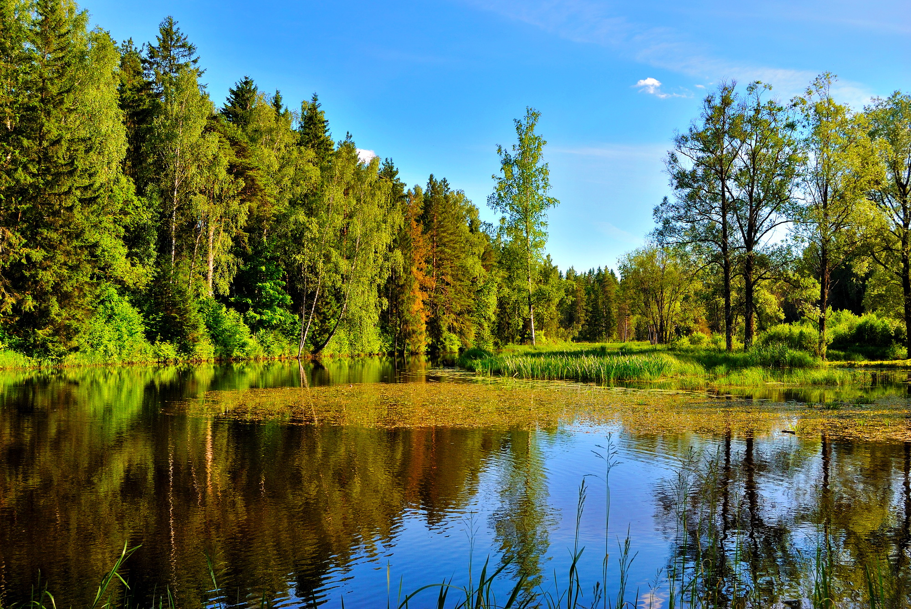
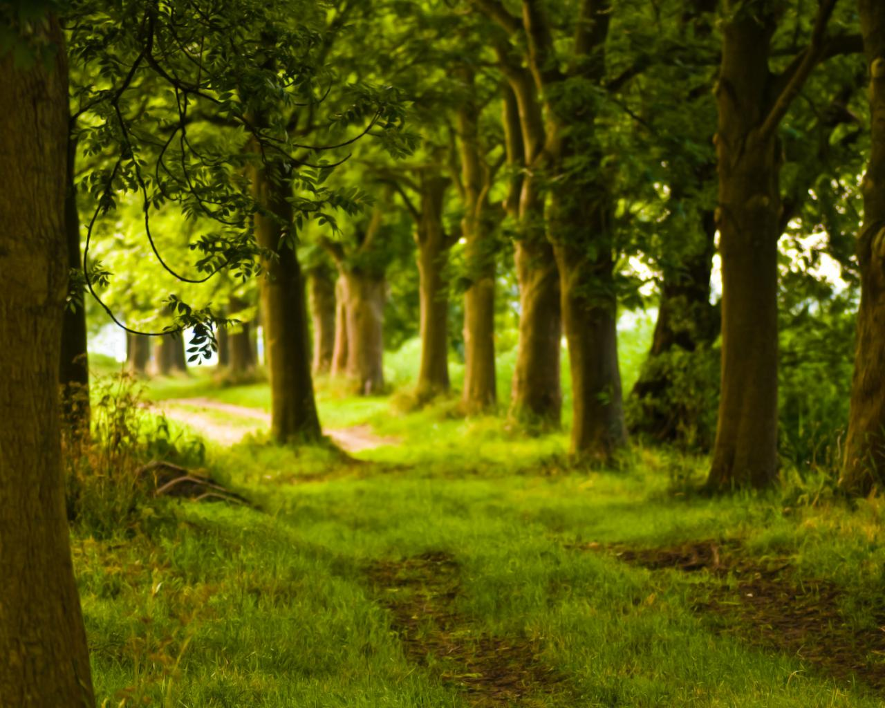
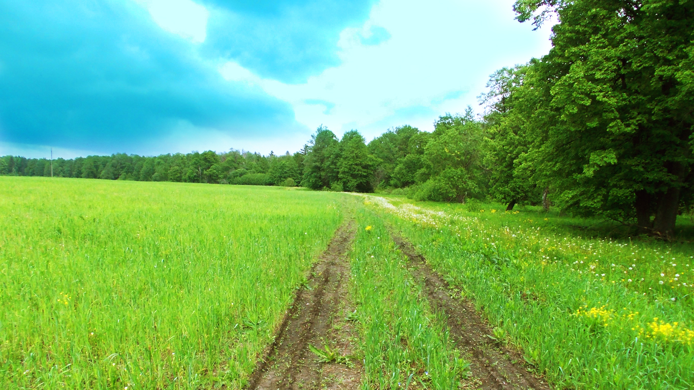
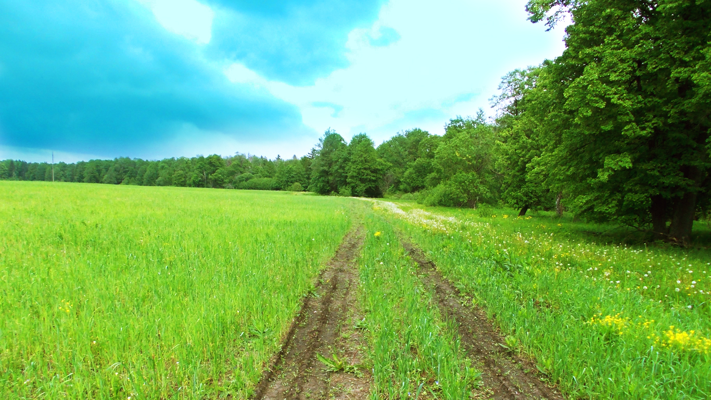

Как я провел лето.
 Я думаю, лето - самое лучшее время года,
потому что тепло, вокруг очень красиво и у нас есть чудесная возможность отдохнуть.
 Лето - время отпусков и каникул. Мы можем поехать куда угодно, проводить время у реки или озера на свежей зеленой траве, плавать в теплой воде, или подняться в горы, или играть в различные игры, кататься на велосипеде и т.д.
Я провожу летние каникулы у моей бабули.
Там есть чем заняться. Большую часть времени я плавал в море и загорал.
Иногда я разжигал с друзьями костер на берегу и мы пекли в нем картошку.
Это было замечательно. Мы рассказывали друг другу анекдоты, и делали все, что хотели. А еще я часто ходил один в лес.
Лето - время отпусков и каникул. Мы можем поехать куда угодно, проводить время у реки или озера на свежей зеленой траве, плавать в теплой воде, или подняться в горы, или играть в различные игры, кататься на велосипеде и т.д.
Я провожу летние каникулы у моей бабули.
Там есть чем заняться. Большую часть времени я плавал в море и загорал.
Иногда я разжигал с друзьями костер на берегу и мы пекли в нем картошку.
Это было замечательно. Мы рассказывали друг другу анекдоты, и делали все, что хотели. А еще я часто ходил один в лес.